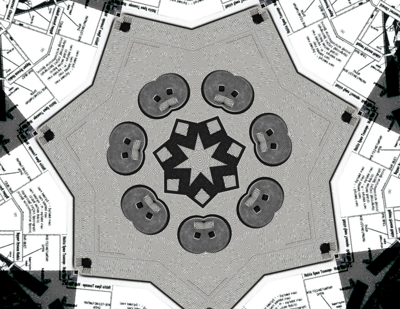

October 24th, 2022 — Josh
I received a very generous gift from my friend's grandpa yesterday (notably, on his birthday :P). Along with some other assorted goodies (like germanium diodes and cool push-buttons), he gave me a floppy disk.
yup, that's him
Although floppies aren't hard to get your hands on, and I have no clue what's on this particular one, it still meant a lot to me, so I wanted to say thanks. Thank you, Valeriy!
Holding historic artifacts in your hands feels infinitely better than reading about them online. Upon seeing the floppy disk I was instantly reminded of my middle school's Administrator account password on our Windows computers -- floppydisk1984. Naturally, I had no idea what that was at the time and thought it was funny cause it had the word "floppy" in it...
actually it's quite related, I just felt like saying that :P
Since I seem to be in a commemorative mood, let me also show you something amazing that my uncle found and gifted to me. Being the cool guy he is, my uncle of course owns an original edition of K&R's The C Programming Language (well, owned... I've been lugging it around with me on trains and car rides for years now).
He also gave me a copy of GEB. Like I said, he's pretty cool 8). But that's not why we're here...
Some months back, my uncle brought over this pamphlet titled "UNIX™ SYSTEM COMMAND SUMMARY for Berkeley 4.2 and 4.3 BSD". Here's a peek of what it looks like:
Isn't that just the coolest thing ever? And since ShitDon'tChange (let's make a note to add that to the WikiWikiWeb), this is still really useful as a resource.
I am really grateful for being able to experience these things. Thank you :)!
Until next time...